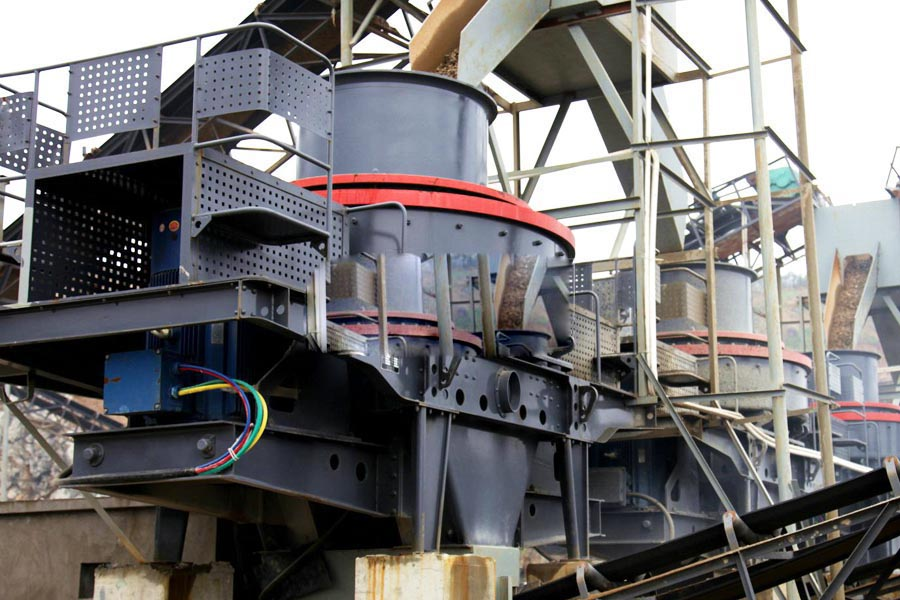

Construction waste crushing production line

Mobile construction waste crushing station for urban construction waste crushing.
artificial sand making process
artificial sand making process. Sand, sand making equipment, gravel equipment, sand making machine manufacturer Sudan, Sand is widely used in a variety of rock, abrasives, refractories, cement clinker, quartz, iron ore, concrete aggregate and other kind of hard, brittle materials in the debris, fine (sand system). For construction sand, gravel road with excellent as appropriate.
On the roll crusher, sand making equipment, sand making equipment on the roll, CAG produce various kinds of sand making equipment, sand making equipment for roller, the roller crusher, roller machine, crusher, sand making machine and engineering machinery, building materials machinery accessories professional manufacturers.
Regarding of the detail condition, two kinds of techniques are usually adopted in producing manufactured sand, dry way and wet way. Both methods can produce high quality manufactured sand as concrete aggregate. Especially, the dry way can produce not only the manufactured sand used in SMA road surface, but also the powder used in asphalt concrete.

Manufactured sand processing chart
1. Material bin.
2. Vertical shaft impact crushers.
3. Inclined vibrating screen.
4. Sand washer or powder separator.
Sudan artifical sand making plant for sale. Sand, Sand price, sand equipment manufacturers, the new third-generation Sand production line, CAG Sand is the nation's top manufacturers to provide various types of sand, sand making equipment and system sand machinery, the product passed ISO9001: 2000 international quality certification.
The feature of processing
1. Because of DR series vertical shaft impact crusher self crushing principle, the shape of manufactured sand is cubic shape.
2. The rank of manufactured sand is reasonable, fineness modulus is adjustable.
3. Index of manufactured sand is accord with the standard of country, and is the high quality concrete aggregate.
Sand making equipment, dryers, mills, CAG sand production equipment, dryer, mill professional manufacturers, I produced the sand making machine, dryer, milling machines and other processing equipment known internally outer.
Sudan artifical sand making plant supplier. Sand Pebbles, river pebbles Sand, sand production line, the new VSI Sand Sand CAG professional manufacturing equipment, VSI crusher, pebble Sand, pebble river sand, sand production line; Latest research and development of a new version of VSI crusher reasonable price, performance, sale and thoughtful.
Leave Me A Message, Now
If you have any questions regarding equipment prices, production line configuration or other problems, you can send a message to us, we will contact you soon.